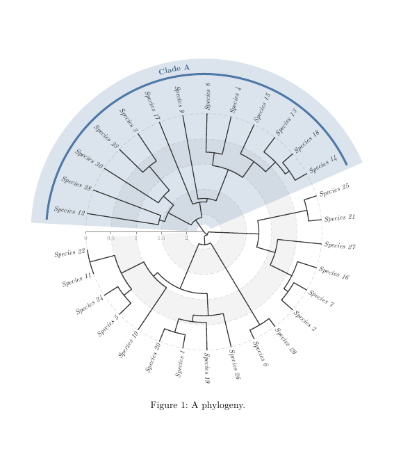

CeTZ / Typst
Saving to .typ with standalone=false writes Typst code that draws the figure with CeTZ, to #include in a Typst document. Without standalone=false the file compiles on its own.
Rotated tip labels and curved clade labels can come out at the wrong angle or spacing, depending on the CeTZ version. Check them in your output.
using PlotPhyloTree, Random
tree = randtree(30; rng=Xoshiro(1), labels=["Species_$i" for i in 1:30])
ladderize!(tree)
p = treeplot(tree; layout=:circular, italic=true, metrics=:lmroman)
highlight!(p, childnodes(tree, rootnode(tree))[1]; label="Clade A")
timescale!(p)
savefig("tree.typ", p; standalone=false, scale=0.8)main.typ:
#set page(width: 16cm, height: auto)
#set text(font: "New Computer Modern")
#figure(
include "tree.typ",
caption: [A phylogeny.],
)typst compile main.typ:

Fonts
The branches, wedges, rings and symbols are drawn where the layout put them. The labels are handed to Typst as text, so they use whatever #set text(font: …) is in force where the file is included. Change the document's font and the tree's labels change with it. To use a different font for one figure, pass font (a name or a list of names) when saving.
The layout reserves room for labels before Typst sets them, so tell it which font to measure with metrics in treeplot: :lmroman (close to New Computer Modern), :lmsans, :times, :helvetica (the default), or fontmetrics with your document font's .otf/.ttf file.
Curved clade labels are measured by Typst: each letter is placed along the arc using its width in the document font. Pass curvedtext=:glyphs to place each letter where the layout put it instead.
Options
cetzstring returns the code as a string. The default CeTZ version needs Typst ≥ 0.13.1; for older Typst pass e.g. cetz="0.3.0" (Typst ≥ 0.11). scale multiplies all lengths, font sizes included. A standalone file sets a font matching metrics.